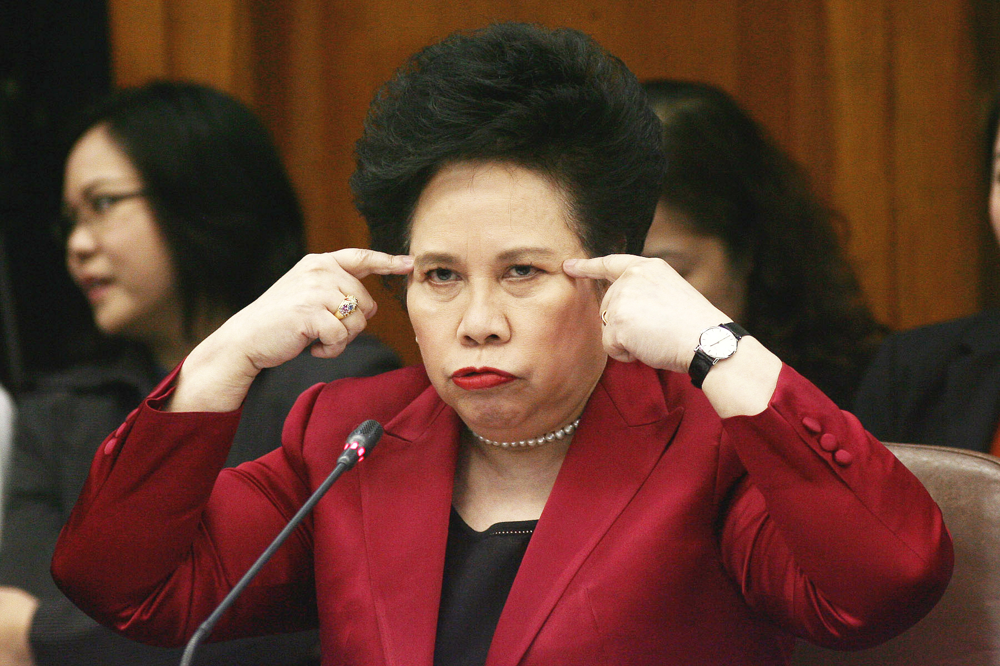

Miriam Defensor-Santiago
The best Philippine president we never had
Early Years
Miriam Palma Defensor-Santiago was born on June 15, 1945 in Iloilo City, Philippines.
As the eldest of seven siblings, she runs the household before attending grade school.
Her mother was a college dean and her father was presiding judge (RTC).
Due to their family budget, Miriam said before that they enjoyed the luxury of filth.
She is married to Narciso Y. Santiago, Jr. with two sons, one died before her.
Timeline
- 1945 - Miriam Palma Santiago was born
- 1957 - Valedictorian, La Paz Elementary School
-
1961 - Valedictorian, Iloilo Provincial National High School
Awardee, All-Around Girl Medallion. -
1965 - Bachelor of Arts in Political Science, Magna Cum Laude,
University of the Philippines. Finished in 3-1/2 instead of 4 years with an average grade of 1.1 - 1969 - Member, Pi Gamma Mu and Phi Kappa Phi international honor societies
- 1969 - Bachelor of Laws, cum laude, University of the Philippines
- 1970-1980 - Special Assistant to the Secretary of Justice
- 1971-1974 - Professor of Political Science, Trinity University of Asia
- 1972 - Fellow, Academy of American and International Law, Southwestern Legal Foundation, Dallas, Texas
- 1972-1975 - Opinion Columnist, Philippines Daily Express newspaper
- 1975 - Master of Laws (DeWitt Fellow), University of Michigan, with “A” average
-
1976 - Doctor of Juridical Science (Barbour Scholar and DeWitt Fellow),
University of Michigan. Requirements (except publication),
fulfilled in six months, with “A” average. - 1976-1988 - Professorial Lecturer, College of Law, University of the Philippines (evening class)
- 1977-1979 - Member, Board of Censors for Motion Pictures
- 1978 - Fellow, UN/UNITAR Programme in International Law, The Hague, Holland and Brussels, Belgium
- 1978 - Fellow, External Session of The Hague Academy of International Law, Tokyo, Japan
- 1979-1980 - Legal Officer, United Nations High Commissioner for Refugees, Geneva, Switzerland
- 1981-1983 - Legal Consultant, University of the Philippines Law Center
- 1982 - Legal Consultant, Philippine Embassy, Washington, D.C.
- 1983-1987 - Presiding Judge, Regional Trial Court, Branch 106, Quezon City
-
1984 - Fellow, Seminar on judicial writing and caseflow management in the trial courts, Institute of Judicial Administration, Supreme Court.
Topnotcher of examination in judicial writing -
1985 - Graduate, California Judicial College, University of California at Berkeley.
In the practical courtroom test, American judges gave her the highest grade of 33 out of 35. - 1988-1989 - Commissioner of Immigration and Deportation
- 1989 - Doctor of Humane Letters, honoris causa, University of San Agustin
- 1989 - Doctor of Laws, honoris causa, Xavier University, Ateneo de Cagayan de Oro
- 1989 - Doctor of Laws, honoris causa, Centro Escolar University
- 1989 - Secretary of Agrarian Reform
- 1990 - Chair and founder, Movement for Responsible Public Service
- 1991 - President and founder, People’s Reform Party
- 1992 - Presidential runner-up (Ranked close No. 2 in scandalous canvassing), Philippine presidential elections
-
1996 - Master of Arts in Religious Studies (without thesis),
Maryhill School of Theology, Quezon City - 1996 - Summer Program of Instruction for Lawyers, Harvard University
- 1997 - Summer Program in Law at Oxford University, sponsored by Florida State University
- 1998 - Paris-Geneva Summer Program in International Law, sponsored by American University
- 1999 - Visiting Fellow, Lauterpacht Research Centre for International Law, Cambridge University
- 2000 - Visiting Law Fellow, St. Hilda’s College, Oxford University
- 2016 - Miriam Defensor-Santiago passed away
Awards
Google Top 20 Most Influential Filipinas of 2010
Womanity Award for public service 2010
Order of Civil Merit, Kingdom of Spain, 2008
The 100 Most Powerful Women in the World, The Australian Magazine, 1996
Magsaysay Award for Government Service, 1988
TOYM Award for Law, 1985
TOWNS Award for Law, 1986
Most Outstanding Alumna in Law, University of the Philippines, 1988
Gold Vision Triangle Award for government service, 1988 YMCA Philippines
Republic Anniversary Award for law enforcement, 1988 Civic Assembly of Women of the Philippines
Golden Jubilee Achievement Award for public service, 1990 Girl Scouts of the Philippines
Celebrity Mother Award, 1991 Gintong Ina Awards Foundation
